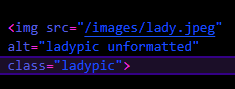
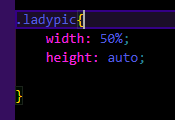
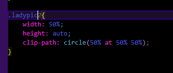
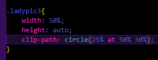
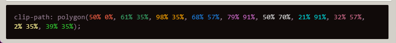

Using Clip-path
Consider the following image. This assumes you are familiar with basic image usage on a website.

Here is the image without a clip-path. It is a simple image of a lady. Lets say, that you only want her head visible, like for a profile picture. This is why we need our friend, the clip-path! clip-path is defined in your CSS on the class of an element. I like to create a separate CSS stylesheet, so that is the method I will be using. However, you may choose to use the style tag in the head of your HTML if you like. For me personally, I like to kep things seperate for organization in case things start getting complex. Up to you!
Steps
- To target a specific image, give it a special class name in the img tag. For our purposes, I will add class="ladypic" inside the img tag. 
- Navigate to your CSS file. If you do not have one, create one in the same directory as your HTML file. Inside the CSS file, add the following code snippet. This will target the class "ladypic" so we can apply the clip-path to the image once we create it. I've 
- Now we will add the clip-path to the class. This will be a circle, so we will use the circle function. According to mdn web_docs, a CSS circle is defined using a radius and position, which makes sense. We will use the circle function to define the radius and position of our clip path. the first parameter is the radius. Here, is is set to 50% of the element. The second parameter is the position. Here, it is set to 50% 50%. These values represent (X,Y) coordinates, respectivley. The X value is 50% from the left, and the Y value is 50% from the top. This gives you complete freedom to place the clip path exactly where you want it. Fantastic! 
- Lets check it out:
-
After modifiying the CSS, this is looking more like what we wanted!
* I am creating a second ladypic2 class for the purposes of this tutorial, but you will only need one for your page. Just make sure you are targeting the right image, and you will have no problems.
So, this is nice! But thats not targeting the head. How would we do that? Well, lets try a smaller radius and decrease the "Y" position to move the circle up.
The circle is great for an example, but there is many other simple shapes you can have. It's a little difficult to determine what values to use for create a shape with points. Fortunatley ther is a ton of tools you can use for speed and accuracy. One such tool is:
You can use this tool to create a shape and it will give you the CSS code. This is also good for learning how to create shapes with points. You can manipulate the points and see how it changes the shape.
One of my favorites is the star.

Pretty cool!